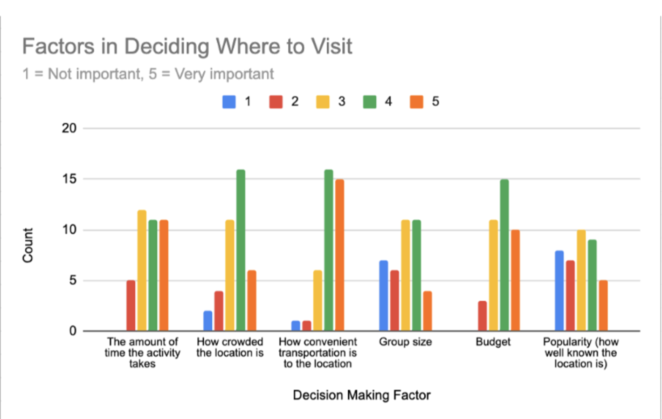
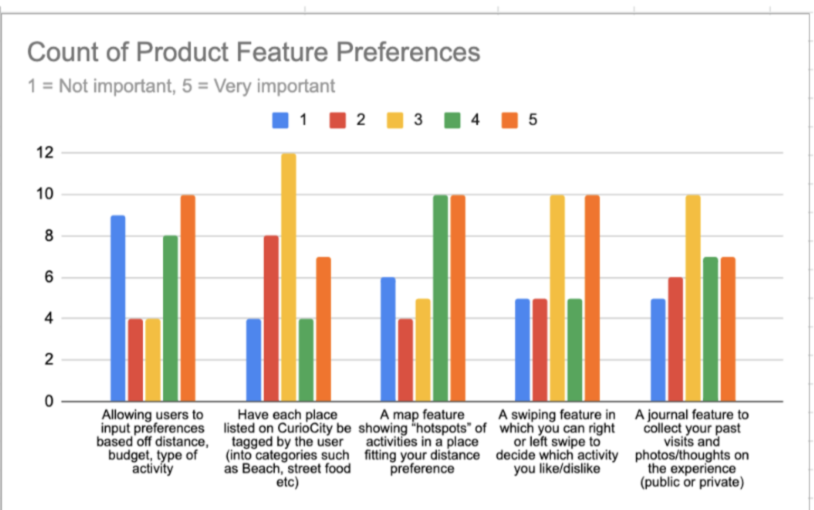
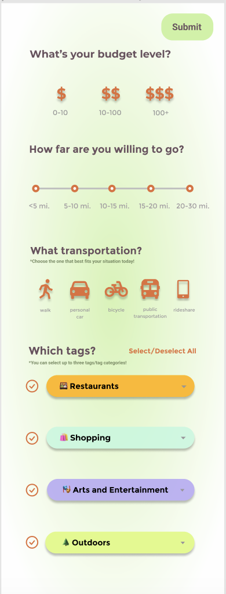
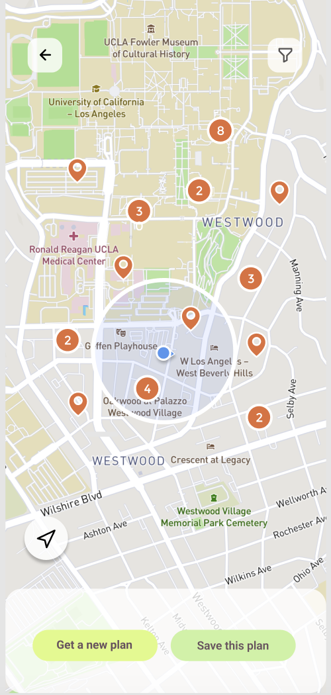
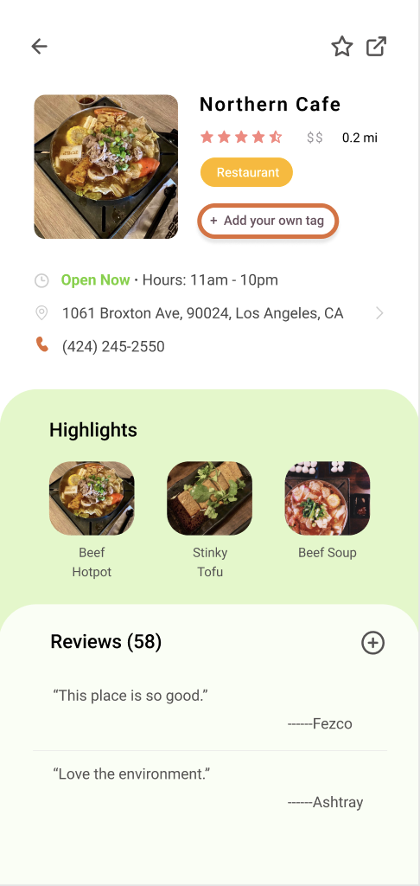
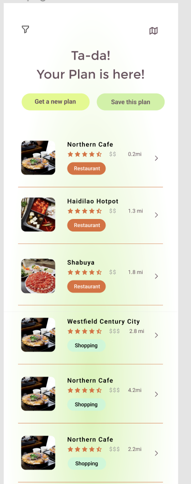

CurioCity
Overview
CurioCity has been one of my favorite parts of college. It has been the project that invigorated my interest in product management and being involved in the life cycle of a project from start to finish. The app's overall goal is to solve the problem of not knowing where to go as a group and avoid going to only commonly frequented places and experiences by providing a wide range of options based on your distance, budget, transportation, and activity preferences.
Why CurioCity was my passion project because my closest friends and I love exploring Los Angeles, and discovering new parts of town. However, after wrapping up the tourist spots, we were confused about where we could go, and I realized a lot of people and friend groups have similar problems!
Team Formation
This was initially a challenging aspect for me because I was unfamiliar with the roles of frontend, backend, design and user research. However, I took up the challenge, and learned as much as I could to be conversationally fluent with domain experts as I interviewed them. Through this process, I created a 14 person team total (7 engineers, 3 UX researchers, 3 designers) and acted as a pivotal connection point between UX and engineering.
Motivating User Research
We distributed a Google Forms survey among UCLA students to gather insights on their preferences, decision-making factors for choosing places to visit, transportation preferences, and prioritized features from a predefined list for validation and focus in our development process.


Layout
Our MVP had 4 basic pages:




MVP Walkthrough
Groupmatch Walkthrough
We began developing the group match feature, which would allow two or more users to input their preferences on their own devices and get a joint suggestion; used agile methodology to structure the timeline of feature development and coordinate across teams